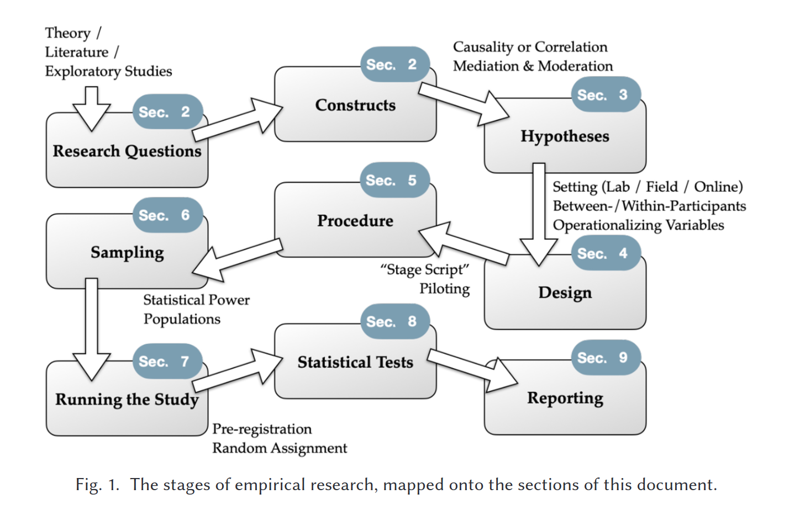
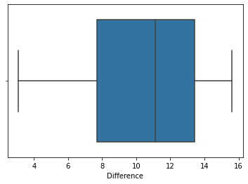

import pandas as pd
import numpy as np
import seaborn as sns
import scipy.stats as stats
import matplotlib.pyplot as pltIntroduction To Statistical Testing
Introduction To Statistical Tests
Deebul Nair
deebul.nair@h-brs.de
Dr. Teena Hasan
teena.hassan@h-brs.de
Hochschule Bonn-Rhein-Sieg
Human-Centered Interaction in Robotics
Learning Goals
- Research Question vs Research Hypothesis vs Statistical Hypothesis
- Why Statistical Test
- Intro Null Hypothesis Statistical Testing
- Descriptive Statistics
- Bunch of Tests
Null Hypothesis Statistical Testing (NHST)?

Power Analysis
References: [1] Guy Hoffman and Xuan Zhao. 2020. A Primer for Conducting Experiments in Human–Robot Interaction. J. Hum.-Robot Interact. 10, 1, Article 6 (March 2021), 31 pages. https://doi.org/10.1145/3412374
This Single Statement Generates Great Robotic Research [1]
- [1] https://blog.robotiq.com/this-single-statement-generates-great-robotics-research
A hypothesis, of course. Writing a hypothesis is a key skill for experimental design.
What is a Hypothesis Anyway?
Simply put, a hypothesis is a statement which makes a prediction about something which is not proven. It is a kind of educated guess.
You need a hypothesis when you want to prove something through experimentation.
- Robotics is a little different from the natural sciences, because it is primarily an engineering field.
- The Engineering Process is different from the Scientific Method, because it doesn’t usually make hypotheses and conduct experiments to prove them.
- Instead, it defines design criteria and then develops technologies which achieve those criteria.
Most of the research work in robotics is spent on developing new technologies and methodologies. However, even though the primary purpose of your research is not to prove a hypothesis, as it is in natural science research, you still need a hypothesis to conduct experiments which prove that your developments work as well as you claim they do.
Therefore, a typical robotics hypothesis might look something like:
"Our algorithm calculates the solution faster than a naive algorithm can calculate the same problem."Examples of Good Hypothesis from Robotics
1. Multi-Robot Grasp Planning for Sequential Assembly Operations (Dogar et al 2015)
In this paper, the authors use multiple mobile manipulators to construct a flat-packed chair with or without re-grasps (i.e. putting down the piece and picking it up in a different way).
The hypothesis can be more or less expressed like this:
Our algorithm calculates a good enough manipulation solution with few re-grasps faster than a naive algorithm can calculate the same problem optimally (i.e. with no re-grasps).
Bad Hypothesis
For the sake of demonstration, here is an example of what a less specific hypothesis might look like, one which does not define variables. It is completely unspecific as to what “quickly” means:
Our algorithm can calculate a solution quickly.
Another problem might arise if the hypothesis does not include testability. For example, this hypothesis would not be testable, because you could never test all of the other algorithms:
Our algorithm calculates a solution better than all of the other planning algorithms.
Example 2: Grasping without Squeezing: Shear Adhesion Gripper with Fibrillar Thin Film (Hawkes et al 2015)
It presents a new type of gripper which, as the authors explain, does not use normal forces to pick up objects as most robotic grippers do. Instead, the gripper uses shear forces which are applied to the manipulated object via a flexible film.
If a gripper uses shear adhesion forces then it will be a viable option for robotic grasping of objects with a large radius of curvature.
Task 1
Write one hypothesis of you RnD/Thesis .
Discussion
Research Hypothesis vs Statistical Hypothesis?
Statistical hypotheses must be mathematically precise and they must correspond to specific claims about the characteristics of the data generating mechanism (i.e., the “population”).
Even so, the intent is that statistical hypotheses bear a clear relationship to the substantive research hypotheses that you care about.
Our hypothesis can be more or less expressed like this: > Our algorithm calculates a good enough manipulation solution with few re-grasps faster than a naive algorithm can calculate the same problem optimally (i.e. with no re-grasps).
So let’s think about what our statistical hypothesis statement would be.
The quantity that we are interested in within the experiment are \(P(regrasps)_{old}\) and \(P(regrasps)_{new}\), the true-but-unknown probability with which the robot re-grasps in the experiment.
\[P(regrasps)_{old} > P(regrasps)_{new}\]
Task 2
Convert your hypothesis from above to statistical hypothesis
Null Hypothesis Statistical Testing (NHST)?
Research Questions and Data Examples
Experiment 1 : Weight Gain
References:
- Moore, D. S., McCabe, G. P., and Craig, B. A. (2012). Introduction to the Practice of Statistics (7th ed.). New York: Freeman.
- Levine, J. A., Eberhardt, N. L., and Jensen, M. D. (1999) Role of nonexcercise activity thermogenesis in resistance to fat gain in humans. Science, 283:212-214.
Description:
“Weight Gain”, provides weights of 16 participants before and after an eight-week period of excessive calorie intake (Moore et al., 2012, p. 425).
Hypothesis:
We will test the hypothesis that 1000 excess calorie intake per day over 8 weeks results in 16 pounds (approximately 7.2 kilograms) weight increase.
Variables:
Weight Before - Weight in pounds (lb) measured before eight weeks of excessive calorie intake.
Weight After - Weight in pounds (lb) measured after eight weeks of excessive calorie intake.
Difference - Weight After - Weight Before.weight_gain_data = pd.read_csv('https://raw.githubusercontent.com/jasp-stats/jasp-desktop/4527546659fdbd0849261f22ec84e9db76adc49d/Resources/Data%20Sets/Data%20Library/2.%20T-Tests/Weight%20Gain.csv')
weight_gain_data.head()| Weight Before | Weight After | Difference | |
|---|---|---|---|
| 0 | 122.54 | 135.74 | 13.20 |
| 1 | 120.78 | 129.36 | 8.58 |
| 2 | 131.12 | 145.20 | 14.08 |
| 3 | 137.06 | 145.64 | 8.58 |
| 4 | 163.24 | 173.80 | 10.56 |
Experiment 2 : Response to Eye Color
Description:
“Response to Eye Color”, provides post-advertisement attitudes towards a brand expressed by four different groups - each group saw the same advertisement except for the aspect that was manipulated: the eye-color of the model.
Hypothesis:
The null hypothesis that the attitudes are the same regardless of the eye-color of the model
Variables:
Group - Experimental conditions (`Blue' = Model with blue eyes, `Brown' = Model with brown eyes, `Green'= Model with green eyes, `Down' = Model's eye color cannot be seen).
Subj - Participant number.
Score - An average of 10 survey questions about attitudes towards the brand (7-point Likert scale). Higher averages correspond to more positive attitudes.Data
eye_color_data = pd.read_csv('https://raw.githubusercontent.com/jasp-stats/jasp-desktop/4527546659fdbd0849261f22ec84e9db76adc49d/Resources/Data%20Sets/Data%20Library/3.%20ANOVA/Response%20to%20Eye%20Color.csv')
eye_color_data.head()| Group | Subj | Score | |
|---|---|---|---|
| 0 | Blue | 1 | 1.3 |
| 1 | Blue | 2 | 1.0 |
| 2 | Blue | 3 | 7.0 |
| 3 | Blue | 4 | 4.2 |
| 4 | Blue | 5 | 5.4 |
References:
Moore, D. S., McCabe, G. P., and Craig, B. A. (2012). Introduction to the Practice of Statistics (7th ed.). New York: Freeman.
Simpson, P. M., Sturges, D. L., and Tanguma, J. (2008). The eyes have it, or do they? The effects of model eye color and eye gaze on consumer as response. The Journal of Applied Business and Economics, 8: 60-72.
Experiment 3 : Brain Size and Intelligence
Reference
Willerman L, Schultz R, Rutledge JN, Bigler ED. In vivo brain size and intelligence. Intelligence. 1991 Apr 1;15(2):223-8.
Description
In this study by Willerman et al. (1991) the researchers use Magnetic Resonance Imaging (MRI) to determine the brain size of the subjects. The researchers take into account gender and body size to draw conclusions about the connection between brain size and intelligence.
Hypothesis
Are the size and weight of your brain indicators of your mental capacity?
Variable Names:
- Gender: Male or Female
- FSIQ: Full Scale IQ scores based on the four Wechsler (1981) subtests
- VIQ: Verbal IQ scores based on the four Wechsler (1981) subtests
- PIQ: Performance IQ scores based on the four Wechsler (1981) subtests
- Weight: body weight in pounds
- Height: height in inches
- MRI_Count: total pixel Count from the 18 MRI scans
brain_data = pd.read_csv('https://scipy-lectures.org/_downloads/brain_size.csv', sep=';', na_values=".")
brain_data.head()| Unnamed: 0 | Gender | FSIQ | VIQ | PIQ | Weight | Height | MRI_Count | |
|---|---|---|---|---|---|---|---|---|
| 0 | 1 | Female | 133 | 132 | 124 | 118.0 | 64.5 | 816932 |
| 1 | 2 | Male | 140 | 150 | 124 | NaN | 72.5 | 1001121 |
| 2 | 3 | Male | 139 | 123 | 150 | 143.0 | 73.3 | 1038437 |
| 3 | 4 | Male | 133 | 129 | 128 | 172.0 | 68.8 | 965353 |
| 4 | 5 | Female | 137 | 132 | 134 | 147.0 | 65.0 | 951545 |
# Statistical Testing
1. Descriptive Statistics
- counts
- mean
- median
- max
- min
- ….
brain_data.describe()| Unnamed: 0 | FSIQ | VIQ | PIQ | Weight | Height | MRI_Count | |
|---|---|---|---|---|---|---|---|
| count | 40.000000 | 40.000000 | 40.000000 | 40.00000 | 38.000000 | 39.000000 | 4.000000e+01 |
| mean | 20.500000 | 113.450000 | 112.350000 | 111.02500 | 151.052632 | 68.525641 | 9.087550e+05 |
| std | 11.690452 | 24.082071 | 23.616107 | 22.47105 | 23.478509 | 3.994649 | 7.228205e+04 |
| min | 1.000000 | 77.000000 | 71.000000 | 72.00000 | 106.000000 | 62.000000 | 7.906190e+05 |
| 25% | 10.750000 | 89.750000 | 90.000000 | 88.25000 | 135.250000 | 66.000000 | 8.559185e+05 |
| 50% | 20.500000 | 116.500000 | 113.000000 | 115.00000 | 146.500000 | 68.000000 | 9.053990e+05 |
| 75% | 30.250000 | 135.500000 | 129.750000 | 128.00000 | 172.000000 | 70.500000 | 9.500780e+05 |
| max | 40.000000 | 144.000000 | 150.000000 | 150.00000 | 192.000000 | 77.000000 | 1.079549e+06 |
Mean vs Median

- Learning Statistics with JASP - Page 61
Inter Quantile Region
- The interquartile range (IQR) is like the range, but instead of the difference between the biggest and smallest value the difference between the 25th percentile and the 75th percentile is taken.
- Percentile : Arange the data in asceding order, then 25th percentile is 25% data is less than this value
- In fact, we’ve already come across the idea. The median of a data set is its 50th percentile!
Standard Deviation
In general, you should expect 68% of the data to fall within 1 standard deviation of the mean,
95% of the data to fall within 2 standard deviation of the mean, and
99.7% of the data to fall within 3 standard deviations of the mean.
This rule tends to work pretty well most of the time, but it’s not exact.
It’s actually calculated based on an assumption that the histogram is symmetric and “bell shaped”.
 * Learning Statistics with JASP - Page 64
* Learning Statistics with JASP - Page 64
Plotting
- Try plotting the data to get a complete picture

Matejka, J., & Fitzmaurice, G.W. (2017). Same Stats, Different Graphs: Generating Datasets with Varied Appearance and Identical Statistics through Simulated Annealing. Proceedings of the 2017 CHI Conference on Human Factors in Computing Systems.
Plots
- Scatter plot
- Box PLot
- Density Plots
- Rain cloud plots
Scatter Plot
# Scater plot
#todo
plt.scatter(range(weight_gain_data.Difference.size), weight_gain_data.Difference)<matplotlib.collections.PathCollection at 0x7f0910a22fa0>plt.scatter( weight_gain_data.Difference, np.zeros(weight_gain_data.Difference.size))<matplotlib.collections.PathCollection at 0x7f090e936910>Box Plot
#Box plot
sns.boxplot(x=weight_gain_data["Difference"])<AxesSubplot:xlabel='Difference'>
Box plot

- https://chartio.com/learn/charts/box-plot-complete-guide/
sns.boxplot(data=weight_gain_data[["Weight Before", "Weight After"]])<AxesSubplot:>sns.violinplot(data=weight_gain_data[["Weight Before", "Weight After"]])<AxesSubplot:>Density plot
sns.displot(data=weight_gain_data, x="Weight Before")sns.displot(data=weight_gain_data, x="Weight Before", kde=True)
sns.displot(data=weight_gain_data[["Weight Before", "Weight After"]], kind='kde')Do you remember any other plot seeing this plot ?
Some plots lie !
Matejka, J., & Fitzmaurice, G.W. (2017). Same Stats, Different Graphs: Generating Datasets with Varied Appearance and Identical Statistics through Simulated Annealing. Proceedings of the 2017 CHI Conference on Human Factors in Computing Systems.
Rain cloud Plot
- Combining all the thre plots together.
- scatter + density + box plot
Why statistical test why not compare mean?
- For example our Weight Gain Dataset.
- Mean(weight before ) = 144.63
- Mean(weight after) = 155.045
- Difference of Means = 10.408
Can you conclude that there is conclusive evidence that the weights increase with the diet ?
The fundamental question underlying statistical analysis:
estimating the amount of evidence in support of our hypothesis, even in the presence of noise.
weight_gain_data.describe()| Weight Before | Weight After | Difference | |
|---|---|---|---|
| count | 16.000000 | 16.000000 | 16.000000 |
| mean | 144.636250 | 155.045000 | 10.408750 |
| std | 22.704877 | 21.438057 | 3.840639 |
| min | 117.260000 | 129.360000 | 3.080000 |
| 25% | 126.115000 | 137.885000 | 7.700000 |
| 50% | 138.270000 | 147.840000 | 11.110000 |
| 75% | 161.480000 | 170.335000 | 13.420000 |
| max | 201.740000 | 204.820000 | 15.620000 |
Statistical Testing for Evaluating Experiments
- Deals with the relationship between the value of data, its variance, and the confidence of a conclusion
A typical situation:
- Existing technique A
- You developed a new technique B
- Key question: Is B better than A?
Evaluating Experiments
1. Define a performance measure, e.g.
- Run-time
- Error
- Accuracy
- Robustness (success rate, MTBF, …)
2. Collect data d
- Run both techniques on the data d
- How to compare the obtained results \(A(d), B(d)\)?
1st Example
Scenario
- A, B are two HRI techniques
- Score is the audience response time
- Data d is a given map, start and goal pose
Example
- A(d) = 0.5 s
- B(d) = 0.6 s What does that mean?
2nd Example
- Same scenario but four tasks
Example
- A(d) = 0.5 s, 0.4 s, 0.6 s, 0.4 s
- B(d) = 0.4 s, 0.3 s, 0.6 s, 0.5 s
Mean of the planning time is
- \(μ_A\) = 1.9 s/4 = 0.475 s
- \(μ_B\) = 1.8 s/4 = 0.45 s
Is B really better than A?
Is B better than A?
- \(μ_A\) = 0.475 s, \(μ_B\) = 0.45 s
- \(μ_A\) > \(μ_B\), so B is better than A?!
- We just evaluated four tests, thus \(μ_A\) and \(μ_B\) are rough estimates only
- We saw too few data to make statements with high confidence
- How can we make a confident statement that B is better than A?
Hypothesis Testing
“Answer a yes-no question about a population and assess that the answer is wrong.” [Cohen’ 95]
- Example: To test that B is different from A, assume they are truly equal.
Then, assess the probability of the obtained result. If the probability is small, reject the hypothesis.
The Null Hypothesis \(H_0\)
- The null hypothesis is the hypothesis that one wants to reject by analyzing data (from experiments)
- \(H_0\) is the default state
- A statistical test can never proof \(H_0\)
- A statistical test can only reject or fail to reject \(H_0\)
- Example: to show that method A is better than B, use \(H_0\): A=B
Typical/Popular Null Hypotheses
Example 1 : Comparing one sample to a known or hypothesized population mean.
\[ H_0 : \mu = 0 \] $ H_1 : $ (two-tailored test )
$ H_1 : < 0 $ (one-tailored test )
$ H_1 : > 0 $ (one-tailored test )
Example 2 : Testing relationships between two or more variables
\[ H_0 : \mu_1 = \mu_2 \] $ H_1 : _1 _2 $ (two-tailored test )
$ H_1 : _1 < _2 $ (one-tailored test )
$ H_1 : _1 > _2 $ (one-tailored test )
P Value
Learning Statistics with JASP, Page 169
Statistical Tests
Student’s t-tests
One sample location test
Research is normally carried out in sample populations, but how close does the sample reflect the whole population? The parametric one-sample t-test determines whether the sample mean is statistically different from a known or hypothesized population mean. The null hypothesis (Ho) tested is that the sample mean is equal to the population mean.
- Given a µ and σ of a population
- Test if a sample (from the population) has a significantly different mean than the population
- Sample of size N
\[ H_0 : \mu = K \] $ H_1 : K $ (two-tailored test )
$ H_1 : < K $ (one-tailored test )
$ H_1 : > K $ (one-tailored test )
1-sample t-test: testing the value of a population mean
scipy.stats.ttest_1samp() tests if the population mean of data is likely to be equal to a given value (technically if observations are drawn from a Gaussian distributions of given population mean). It returns the T statistic, and the p-value (see the function’s help):
from scipy import stats
stats.ttest_1samp(brain_data['VIQ'], 0) TtestResult(statistic=30.08809997084933, pvalue=1.3289196468727879e-28, df=39)Reporting/Conclusion
With a p-value of 10^-28 we can claim that the population mean for the IQ (VIQ measure) is not 0.
One Sample t-Test: Assumptions
- Independently generated samples
- The population distribution is Gaussian (otherwise the t-distribution is not the correct choice)
- Mean is known
BINOMIAL TEST
- The binomial test is effectively a non-parametric version of the one-sample t-test for use with dichotomous (i.e. yes/no) categorical datasets.
- This tests whether or not the sample frequency is statistically different from a known or hypothesized population frequency.
- The null hypothesis (Ho) tested is that the sample data frequency is equal to the expected population frequency.
ASSUMPTIONS
Three assumptions are required for a binomial test to provide a valid result: * The test variable should be a dichotomous scale (such as yes/no, male/female etc.). * The sample responses should be independent * The sample size is less, but representative of the population
Example : Laptop
Open binomial.csv, this contains one column of data showing the number of students using either a Windows laptop or a MacBook at University.
In January 2018, when comparing just the two operating systems, the UK market share of Windows was 86% and Mac IOS 14%.
Null hypothesis \(H_0 = 0.86\)
Alternate hypothesis \(H_0 \neq 0.86\)
laptop_data = pd.read_csv('Binomial.csv')
laptop_data
laptop_data.describe()| Laptop | |
|---|---|
| count | 90 |
| unique | 2 |
| top | Windows |
| freq | 54 |
laptop_data.value_counts()Laptop
Windows 54
Mac 36
dtype: int64result = stats.binomtest(54, n=90, p=0.86, alternative='two-sided')
print ('pvalue : ', result.pvalue)
print ('95% confidence level' ,result.proportion_ci(confidence_level=0.95))
print ('proportion estimate ', result.proportion_estimate)pvalue : 1.1957465473118124e-09
95% confidence level ConfidenceInterval(low=0.4913413183034394, high=0.7018860844296883)
proportion estimate 0.6REPORTING THE RESULTS
The UK proportion of Windows and MacBook users was reported to be 86% and 14% respectively. In a cohort of University students (N=90), a Binomial test revealed that the proportion of students using Windows laptops was significantly less (60%, p<.001) and those using MacBooks significantly more (40.4%, p<.001) than expected.
Two Sample t-Test
- Often, one wants to compare the means of two samples to see if both are drawn from populations with equal means
- Example: Compare two estimation procedures (operating on potentially different data sets)
- Typical Hypotheses \[ H_0 : \mu_1 = \mu_2 \] $ H_1 : _1 _2 $ (two-tailored test )
$ H_1 : _1 < _2 $ (one-tailored test )
$ H_1 : _1 > _2 $ (one-tailored test )
- This test produces a t-score which is a ration of the differences between the two groups and the differences within the two groups:
- A large t-score indicates that there is a greater difference between groups. The smaller the t-score, the more similarity there is between groups.
- A t-score of 5 means that the groups are five times as different from each other as they are within each other.
- The null hypothesis (Ho) tested is that the population means from the two unrelated groups are equal
2-sample t-test: testing for difference across populations
We have seen above that the mean VIQ in the male and female populations were different. To test if this is significant, we do a 2-sample t-test with scipy.stats.ttest_ind():
female_viq = brain_data[brain_data['Gender'] == 'Female']['VIQ']
male_viq = brain_data[brain_data['Gender'] == 'Male']['VIQ']
stats.ttest_ind(female_viq, male_viq) Ttest_indResult(statistic=-0.7726161723275012, pvalue=0.44452876778583217)Paired tests: repeated measurements on the same individuals
PIQ, VIQ, and FSIQ give 3 measures of IQ. Let us test if FISQ and PIQ are significantly different. We can use a 2 sample test:
stats.ttest_ind(brain_data['FSIQ'], brain_data['PIQ']) Ttest_indResult(statistic=0.465637596380964, pvalue=0.6427725009414841)The problem with this approach is that it forgets that there are links between observations: FSIQ and PIQ are measured on the same individuals. Thus the variance due to inter-subject variability is confounding, and can be removed, using a “paired test”, or “repeated measures test”:
stats.ttest_rel(brain_data['FSIQ'], brain_data['PIQ']) TtestResult(statistic=1.7842019405859857, pvalue=0.08217263818364236, df=39)One-way ANOVA
- Whereas t-tests compare the means of two groups/conditions, one-way analysis of variance (ANOVA) compares the means of 3 or more groups/conditions.
- The null hypothesis tested is that there is no significant difference between the means of all the groups. If the null hypothesis is rejected,.
- ANOVA just states that there is a significant difference between the groups but not where those differences occur. * To determine where the group differences are, post hoc (From the Latin post hoc, “after this”) tests are subsequently used.
\[H_0 : \mu_1 = \mu_2 = \mu_n \]
ASSUMPTIONS
The independent ANOVA makes the same assumptions as most other parametric tests. * The independent variable must be categorical and the dependent variable must be continuous. * The groups should be independent of each other. * The dependent variable should be approximately normally distributed. * There should be no significant outliers. * There should be homogeneity of variance between the groups otherwise the p-value for the F-statistic may not be reliable.
- The first 2 assumptions are usually controlled through the use of appropriate research method design.
- If the last three assumptions are violated then the non-parametric equivalent, Kruskal-Wallis should be considered instead.
Data : ANOVA diets.csv. * This contains A column containing the 3 diets used (A, B and C) * another column containing the absolute amount of weight loss after 8 weeks on one of 3 differentdiets. * For good practice check the descriptive statistics and the boxplots for any extreme outliers
diet_loss_data = pd.read_csv('Independent ANOVA diets.csv')
diet_loss_data| Diet | Weight loss kg | |
|---|---|---|
| 0 | Diet A | 3.8 |
| 1 | Diet A | 6.0 |
| 2 | Diet A | 0.7 |
| 3 | Diet A | 2.9 |
| 4 | Diet A | 2.8 |
| ... | ... | ... |
| 67 | Diet C | 2.8 |
| 68 | Diet C | 4.1 |
| 69 | Diet C | 5.3 |
| 70 | Diet C | 9.2 |
| 71 | Diet C | 6.1 |
72 rows × 2 columns
sns.boxplot(data=diet_loss_data, x='Diet', y='Weight loss kg')<AxesSubplot:xlabel='Diet', ylabel='Weight loss kg'>stats.f_oneway(diet_loss_data[diet_loss_data['Diet'] == 'Diet A']['Weight loss kg'],
diet_loss_data[diet_loss_data['Diet'] == 'Diet B']['Weight loss kg'],
diet_loss_data[diet_loss_data['Diet'] == 'Diet C']['Weight loss kg'])F_onewayResult(statistic=10.825519115627964, pvalue=8.145779232433143e-05)Results
The main ANOVA table shows that the F-statistic is significant (p<.001) and that there is a large effect size. Therefore, there is a significant difference between the means of the 3 diet groups.
Post hoc Anlysis : tukey_hsd
Tukey’s honestly significant difference (HSD) test performs pairwise comparison of means for a set of samples.
Whereas ANOVA (e.g. f_oneway) assesses whether the true means underlying each sample are identical, Tukey’s HSD is a post hoc test used to compare the mean of each sample to the mean of each other sample.
The null hypothesis is that the distributions underlying the samples all have the same mean.
The test statistic, which is computed for every possible pairing of samples, is simply the difference between the sample means.
For each pair, the p-value is the probability under the null hypothesis (and other assumptions; see notes) of observing such an extreme value of the statistic, considering that many pairwise comparisons are being performed.
Confidence intervals for the difference between each pair of means are also available.
https://docs.scipy.org/doc/scipy/reference/generated/scipy.stats.tukey_hsd.html#scipy.stats.tukey_hsd
res = stats.tukey_hsd(diet_loss_data[diet_loss_data['Diet'] == 'Diet A']['Weight loss kg'],
diet_loss_data[diet_loss_data['Diet'] == 'Diet B']['Weight loss kg'],
diet_loss_data[diet_loss_data['Diet'] == 'Diet C']['Weight loss kg'])
print (res)Tukey's HSD Pairwise Group Comparisons (95.0% Confidence Interval)
Comparison Statistic p-value Lower CI Upper CI
(0 - 1) -0.404 0.777 -1.832 1.024
(0 - 2) -2.579 0.000 -4.007 -1.151
(1 - 0) 0.404 0.777 -1.024 1.832
(1 - 2) -2.175 0.001 -3.603 -0.747
(2 - 0) 2.579 0.000 1.151 4.007
(2 - 1) 2.175 0.001 0.747 3.603
Output
- Post hoc testing shows that there is no significant difference between weight loss on diets A and B.
- However, It is significantly higher in diet C compared to diet A (p<.001) and diet B (p=.001). Cohen’s d shows that these differences have a large effect size.
Reporting
- Independent one way ANOVA showed a significant effect of the type of diet on weight loss after 10 weeks (F (2, 69) =46.184, p<.001, ω2 = 0.214.
- Post hoc testing using Tukey’s correction revealed that diet C resulted in significantly greater weight loss than diet A (p<.001) or diet B (p=.001).
- There were no significant differences in weight loss between diets A and B (p=.777)
!pip3 install --upgrade scipyRequirement already up-to-date: scipy in /home/deebuls/.local/lib/python3.8/site-packages (1.10.1)
Requirement already satisfied, skipping upgrade: numpy<1.27.0,>=1.19.5 in /home/deebuls/.local/lib/python3.8/site-packages (from scipy) (1.22.4)Linear Regression
- This approach is founded on the insight that t-tests and one-way ANOVAs are all special cases of a general linear regression model.
- Using regression analysis can help ensure consistency in analyzing and comparing results across studies.
- It also offers a straightforward way to control for confounding variables.
- Regression tests the null hypothesis (Ho) that there will be no significant prediction of the dependent(outcome) variable by the predictor variable(s).
g = sns.scatterplot(data=weight_gain_data, x="Weight Before", y="Weight After")result = stats.linregress(weight_gain_data['Weight Before'], weight_gain_data['Weight After'])
print(result.intercept, result.intercept_stderr, result.pvalue)20.32287010489955 6.04654012186869 2.1185490670472105e-12plt.plot(weight_gain_data['Weight Before'], weight_gain_data['Weight After'], 'o', label='original data')
plt.plot(weight_gain_data['Weight Before'], result.intercept + result.slope*weight_gain_data['Weight Before'], 'r', label='fitted line')
plt.legend()
plt.show()Assumptions of Statistical Tests
- All of the above-mentioned statistical tests are only valid given certain assumptions.
- For example, ANOVA assumes independence of observations, a normal distribution of residuals, and ho- moscedasticity of variances.
- There exist statistical methods that check for violations of these assumptions.
Normality Test
Before running the data we have to do the Normality Test
How to check if the data is normal
scipy.stats.normal_
Test whether a sample differs from a normal distribution.
This function tests the null hypothesis that a sample comes from a normal distribution.
It is based on D’Agostino and Pearson’s test that combines skew and kurtosis to produce an omnibus test of normality.
k2, p = stats.normaltest(diet_loss_data[diet_loss_data['Diet'] == 'Diet A']['Weight loss kg'])
print ('pvalue ', p)pvalue 0.992891828851092Reporting
p value reported is higher than 0.05 so we have to accept the hypothesis that the data is normally distirbuted
Other Test
- COMPARING MORE THAN TWO RELATED GROUPS - RMANOVA
- COMPARING INDEPENDENT GROUPS AND THE EFFECTS OF COVARIATES : ANCOVA
- ANOVA can be used to compare the means of one variable (dependent) in two or more groups,
- whereas analysis of covariance (ANCOVA) sits between ANOVA and regression and compares the means of one (dependent) variable in two or more groups while taking into account the variability of other continuous variables (COVARIATES).
- TWO-WAY INDEPENDENT ANOVA
- One-way ANOVA tests situations when only one independent variable is manipulated,
- two-way ANOVA is used when more than 1 independent variable has been manipulated.
- In this case, independent variables are known as factors.
Bayesian Statistics

Bayesian Statistics
- Bayesian Binomial test
- Bayesian ANOVA test
- Bayesian Regression test
- ….
Bayesian T-test

Which Test should I use ?
Step 1 : Type of test
- Comparing one sample to a known or hypothesized population mean.
- Testing relationships between two or more variables
- Predicting outcomes
- Testing for differences between two independent groups
- Testing for differences between two related groups
- Testing for differences between three or more independent groups
- Testing for differences between three or more related groups
- Test for interactions between 2 or more independent variables
- …
Comparing one sample to a known or hypothesized population mean.

Task
Find the statistical test ?
Experiment 1 : Weight Gain ?
Experiment 2 : Response to eqye color
Experiment 3: Brain size Inteligence
What Happens for Large N?
Have you seen p-value, statistical test in the papers you have read ?
Any Deep learning paper ?
The larger the sample size, the easier it is to show differences…
… but for large sample sizes, we can show any statistical significant difference no matter how small it is
A statistically significant difference does not tell anything about if the difference is meaningful!
See concept of “informativeness”
For large N, differences may by statistically significant but practically meaningless!
Ethical Question
- Dark side of statistics
- https://en.wikipedia.org/wiki/How_to_Lie_with_Statistics
- https://genomicsclass.github.io/book/pages/plots_to_avoid.html
- https://www.nature.com/articles/s41467-020-19160-7
Conclusion
- When to use NHST?
- Statistical-Analysis-in-JASP-A-Students-Guide
- Select the test you should do
- Prepare your experiments and dataset
- Do the test
- Dont stop here
- Statistical Analysis Bayesian Guide Jasp
Thank You
References
https://scipy-lectures.org/packages/statistics/index.html
https://ethanweed.github.io/pythonbook/landingpage.html
https://scientistseessquirrel.wordpress.com/2018/10/02/presenting-statistical-results-pointers-in-scientific-writing/
https://web.archive.org/web/20091029162244/http://www.wiwi.uni-muenster.de/ioeb/en/organisation/pfaff/stat_overview_table.html
https://www.jmp.com/en_sg/statistics-knowledge-portal/t-test.html
Lab Class
- Statistics with JASP
- Exercise 1
Exercise: Statiscital Test 1
‘Therapeutic Touch’ (TT) is a nursing practice rooted in mysticism but alleged to have a scientific basis. Practitioners of TT claim to treat medical conditions by using their hands to manipulate a ‘human energy field’ perceptible above the patients’ skin. Being a skeptical mind, 9-year old Emily Rosa ventured to test these claims by designing an experiment where TT practitioners had to correctly identify the location of the experimenter’s hand (above their left or right hand) while being blinded by a screen. The results of this experiment were later published in the prestigious Journal of the American Medical Association (Rosa et al., 1998).
- Open the “Emily Rosa” dataset https://osf.io/3wg6m/m (under “5. Frequencies”).
- Get a descriptive overview of the data by producing a frequency table of the variable Outcome. How many percent of practitioners guessed correctly?
- What is the type of test ? Which test will you use ? Explain your answer ?
- State the null and alternate huypothesis.
- Conduct the test . Report will you accept the Null hypothesis?
Exercise: Statistical Test 2
A teacher believes that directed reading activities in the classroom can improve the reading ability of elementary school children. She convinces her colleagues to give her the chance to try out the new method on a random sample of 21 third-graders. After they participated for 8 weeks in the program, the children take the Degree of Reading Power test (DRP). Their scores are compared to a control group of 23 children who took the test on the same day and followed the same curriculum apart from the reading activities.
- Open the “Directed Reading Activities” or https://osf.io/3wg6m/ (under “2. T-Tests”).
- Get a descriptive overview of the data.
- Create a table that shows the means and standard deviations of DRP scores in the control and treatment group.
- Create a boxplot that shows the distribution of DRP scores for each group
- What is the type of test ? Which test will you use ? Explain your answer ?
- State the null and alternate huypothesis.
- Conduct the test . Report will you accept the Null hypothesis?
Exercise :
A researcher is interested in what attributes people look for in a prospective partner. Specifically, the researcher wants to know whether looks or personality play an important role in this selection process, and whether the importance of these factors differs between men and women. They decide to design a speed-dating study where 20 people – 10 men and 10 women – each have speed-dates with 9 other people, who differ in attractiveness (either attractive, average, or ugly) and charisma (either high charisma, some charisma, or no charisma). After each speed date, the participants of the study rate their preference for each date, allowing the researcher to assess the influence of attractiveness and charisma on dating preference, and whether the influence differs between male and female raters. (Note that this is a fictional data set created by Andy Field.)
- Open the “Looks or Personality” dataset https://osf.io/3wg6m/ (under “3. ANOVA”).
- Create a table that shows the means and standard deviations of preference scores across attractiveness, charisma, and gender. Is this table easy to interpret? What might be an alternative method for obtaining a descriptive overview of the data?
- What is the type of test ? Which test will you use ? Explain your answer ?
- State the null and alternate huypothesis.
- Conduct the test . Report will you accept the Null hypothesis?
Comments